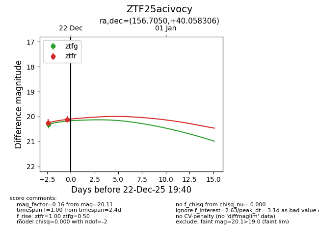
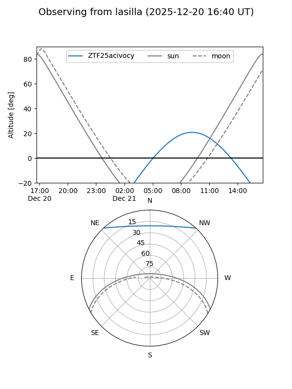
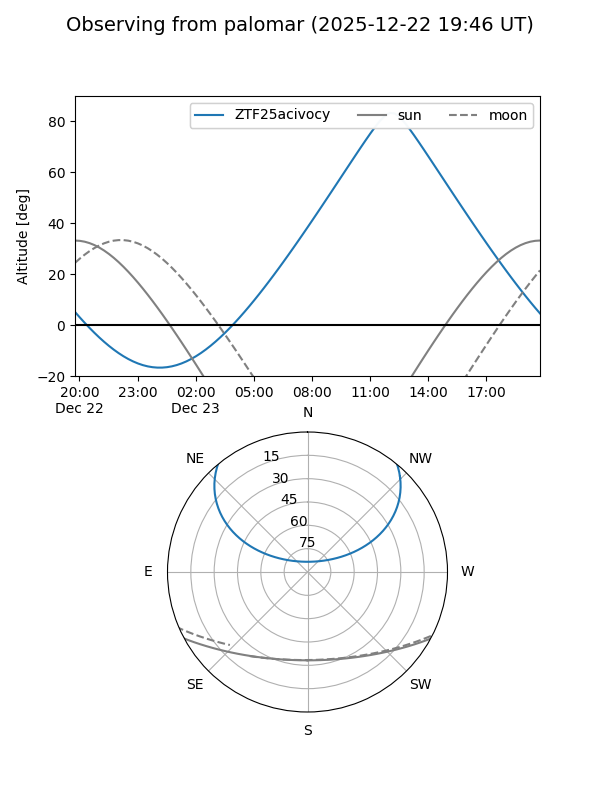
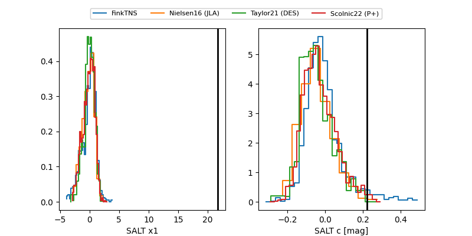

ZTF25acivocy
Target ZTF25acivocy at 2025-12-22 19:44
Aliases and brokers:
FINK: fink-portal.org/ZTF25acivocy
Lasair: lasair-ztf.lsst.ac.uk/objects/ZTF25acivocy
ALeRCE: alerce.online/object/ZTF25acivocy
alt names
ZTF25acivocy (ztf,fink_ztf)
Coordinates:
equatorial (ra, dec) = 156.7050,+40.05831
equatorial (HMS+DMS) = 10:26:49.21,+40:03:29.90
galactic (l, b) = (180.1352,+57.50810)
Flags:
Photometry:
last ztfg=20.31, ztfr=20.11
1 ztfg, 2 ztfr detections
Lightcurve

Visibility


Additional plots
